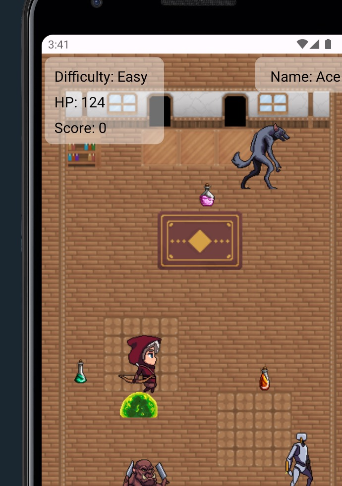

Deep Reinforcement Learning for Modern Cryptocurrency Trading (Fall 2024)
This project applied advanced reinforcement learning techniques to cryptocurrency trading, focusing on Bitcoin. Using Deep Q-Learning (DQN) and Proximal Policy Optimization (PPO) models, we developed agents capable of optimizing buy, sell, and hold strategies based on historical price data. Our approach also compared these methods to a baseline Bollinger Bands strategy. Results revealed that PPO outperformed DQN in handling market volatility, achieving a modest total return of 4.91% with minimal risk. The findings contribute to AI-driven financial strategies by highlighting the strengths and limitations of reinforcement learning in volatile cryptocurrency markets.
📂 View Presentation | 📄 View Deep Learning Report
Iris - Navigation Aid for the Blind (Spring 2024)
The Iris project is a Swift-based iOS application designed to assist visually impaired individuals in navigating their surroundings. Using real-time object detection powered by a YOLO model, the app continuously captures environmental data through the iPhone camera. I developed the user interface and integrated a text-to-speech (TTS) system to provide spoken feedback about detected obstacles. This project was focused on accessibility and improving the independence of visually impaired users.
Detecting Disease from Respiratory Audio (Spring 2024)
This project involved developing a deep learning pipeline for detecting respiratory diseases using audio spectrograms. I preprocessed patient data to generate Mel spectrograms for each breathing cycle and applied Principal Component Analysis to analyze data trends. Using a Convolutional Neural Network (CNN), I built a model that achieved 82% accuracy in predicting diseases from spectrogram data.
Dungeon Crawler (Fall 2023)
Dungeon Crawler is an interactive game built in Android Studio, featuring a player navigating through a dynamically generated dungeon environment. I implemented the game’s interaction mechanics, including enemy behaviors, movement physics, and level progression. As the lead developer, I structured the game architecture using Agile methodologies and created UML diagrams, including Sequence Diagrams and System Sequence Diagrams, to map out the design.
Orbital Dynamics (Spring 2022)
In this project, I developed a predictive model for tracking celestial bodies using machine learning. I trained a linear regression model on 250 data points to estimate the position of a comet over time, while also computing its velocity and acceleration. By scaling the model to different celestial objects, I demonstrated its adaptability in predicting orbital paths. The final analysis and visualizations were done using Matplotlib to illustrate real-time orbital movements.